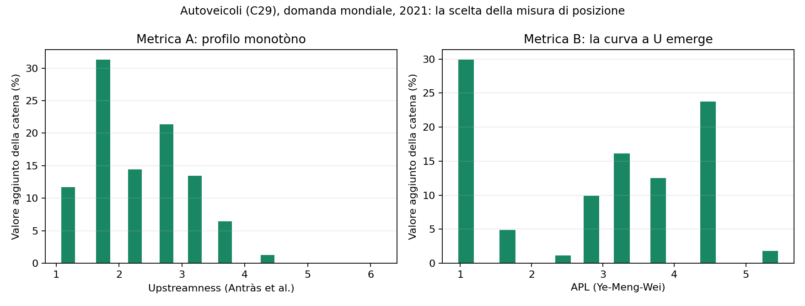
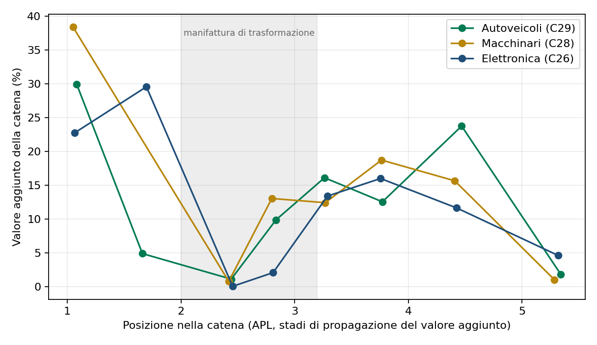
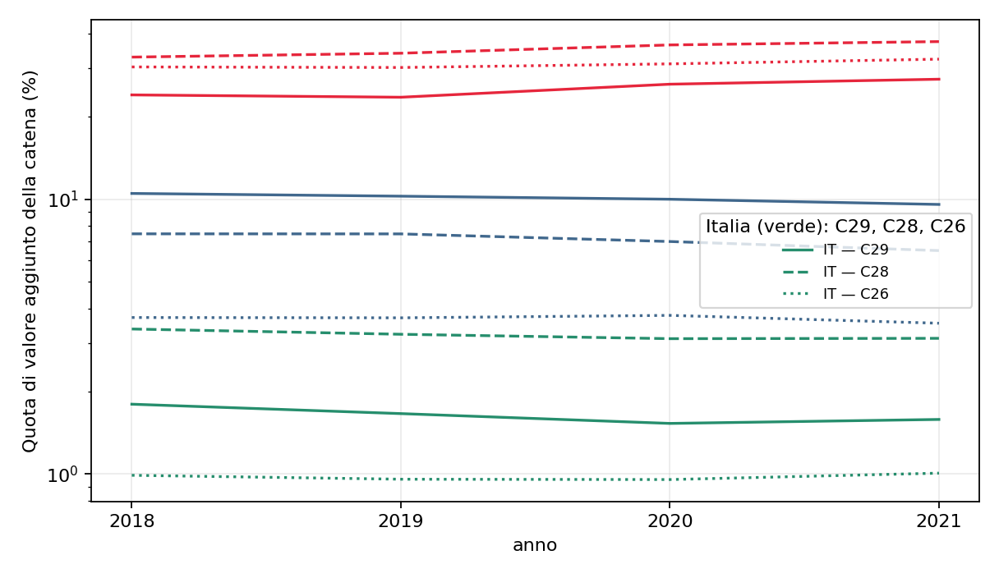
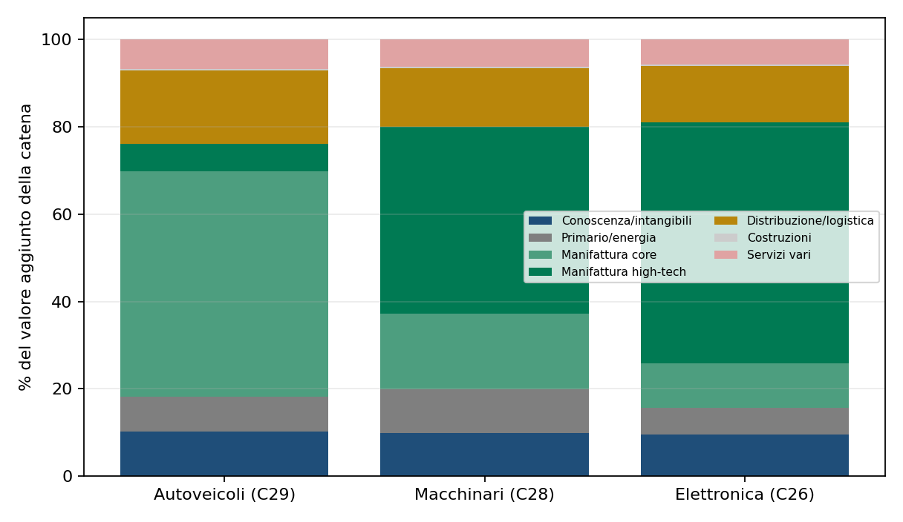
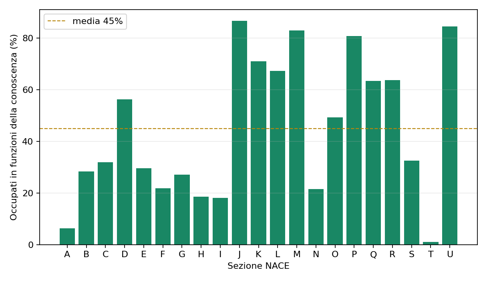
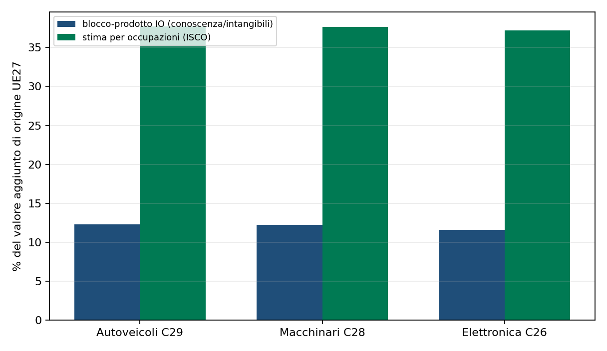

La smile curve nelle catene del valore globale
Valore aggiunto per posizione nella filiera: autoveicoli, macchinari ed elettronica (2018–2021)
Paolo Volterra ![]()
La smile curve descrive la distribuzione del valore aggiunto lungo le fasi di una catena produttiva: elevato nelle attività a monte (ricerca, design, componenti tecnologici) e a valle (marca, distribuzione, servizi), ridotto nella manifattura di trasformazione al centro. Il documento ricostruisce il valore aggiunto generato dalle catene di autoveicoli, macchinari ed elettronica a partire dalle tavole input-output inter-paese di Eurostat, distribuendolo per prodotto e paese di origine. Il risultato principale è metodologico: la forma a U emerge solo se la posizione nella catena è misurata come lunghezza media di propagazione del valore aggiunto, mentre la misura tradizionale di upstreamness produce un profilo monotòno. Su questa base si quantifica il presidio dell’Italia e dell’Europa nelle tre filiere e la composizione funzionale del valore.
catene del valore globale, smile curve, valore aggiunto, politica industriale, input-output
Versione citabile su Zenodo, con il PDF: doi.org/10.5281/zenodo.22804168.
1 Il concetto
La smile curve rappresenta come il valore aggiunto si distribuisce lungo le fasi di una catena produttiva. L’idea fu formulata all’inizio degli anni Novanta da Stan Shih, fondatore della società informatica Acer, osservando l’industria dei personal computer: le attività collocate alle due estremità della catena — la ricerca e sviluppo, il design e i componenti a elevato contenuto tecnologico a monte, la marca, il marketing, la distribuzione e i servizi a valle — trattengono una quota di valore superiore rispetto alla manifattura e all’assemblaggio, che occupano la parte centrale. Rappresentando sull’asse orizzontale le fasi della catena e sull’asse verticale il valore aggiunto, il profilo risultante assume la forma di una U, da cui il nome [1]. La rappresentazione grafica diventa canonica nella letteratura sulla localizzazione delle attività economiche [2].
Il concetto è diventato uno strumento centrale nel dibattito di politica industriale perché suggerisce una gerarchia tra le attività. I paesi a reddito elevato temono che la manifattura si sposti altrove mentre le estremità della catena restano in patria, con effetti di indebolimento della base produttiva; i paesi emergenti temono invece di restare bloccati nella parte bassa della curva, specializzati in attività di assemblaggio a basso valore. Il upgrading lungo la catena — lo spostamento verso le estremità — è diventato così un obiettivo esplicito delle politiche di sviluppo e, più di recente, delle politiche di sovranità tecnologica e di riduzione delle dipendenze strategiche.
2 I livelli di applicazione della curva
La stessa logica si applica a tre livelli. Il livello originario è quello dell’impresa: Shih osservò il fenomeno all’interno della propria azienda, tra le funzioni che vanno dalla progettazione all’assistenza, ed è lo stesso principio della catena del valore di Porter [3]. A questo livello la grandezza misurata è il margine, e l’evidenza empirica conferma la U: nel caso dell’iPod e dei computer portatili il valore è catturato da chi detiene componenti chiave e marca, non dall’assemblaggio [4]; i margini dell’industria elettronica confermano la curva, mentre i rendimenti del capitale la attenuano [5]; nelle grandi imprese il valore aggiunto per dipendente è più alto alle estremità della catena di fornitura [6]. Forme e ampiezza differiscono però tra imprese a controllo nazionale ed estero e tra paesi [7]. Quando l’unità di analisi è l’impresa, un confronto corretto richiede di tenere conto della sua fase di vita: i valori di bilancio — redditività, crescita, leva, distribuzione dei dividendi — seguono andamenti tipici diversi tra avvio, crescita, maturità e declino, e il confronto tra pari va quindi condotto a parità di fase [8], [9], [10].
Il secondo livello è quello del ciclo di vita del prodotto: la sequenza concezione, ingegnerizzazione, produzione, distribuzione, uso e assistenza, fine vita. La letteratura sulla servitizzazione descrive lo spostamento del valore verso i servizi che accompagnano il prodotto durante l’uso [11], [12]; l’economia circolare aggiunge una fase di valore a valle (rigenerazione, riciclo); le tecnologie di produzione come la stampa tridimensionale possono riplasmare la geografia del valore spostandolo verso progettazione e personalizzazione [13]. A differenza del livello precedente, la “curva del ciclo di vita” è un’estensione concettuale sostenuta da questi filoni, non una misura standardizzata.
Il terzo livello è quello della catena del valore globale, che questo documento quantifica: valore aggiunto per industria e paese lungo una filiera internazionale. I tre livelli condividono la tesi di fondo — il valore si addensa alle estremità — ma non misurano la stessa grandezza, e vanno quindi tenuti distinti nel confronto.
3 Misurare il valore lungo una catena
Per trasformare l’intuizione in una misura servono due grandezze per ciascuna attività: il valore aggiunto che essa trattiene e la sua posizione lungo la catena. Le tavole input-output inter-paese permettono di ricostruire entrambe. Una tavola di questo tipo registra, per ogni coppia di paesi e settori, il valore degli input intermedi scambiati, la domanda finale e il valore aggiunto generato. Dalla matrice degli input intermedi si ricava la matrice dei coefficienti tecnici e, da questa, l’inversa di Leontief, che descrive il fabbisogno diretto e indiretto di produzione per soddisfare un’unità di domanda finale. Il lavoro fondativo che scompone le esportazioni lorde nelle loro componenti di valore aggiunto nazionale ed estero è di Koopman, Wang e Wei [14]; una ricostruzione del valore aggiunto per fattori produttivi è in Timmer e altri [15].
La posizione lungo la catena può essere misurata in modi diversi. La misura più diffusa, introdotta da Antràs, Chor, Fally e Hillberry, è la upstreamness: il numero medio di stadi che un prodotto attraversa prima di raggiungere la domanda finale, calcolato come distanza ricorsiva dai beni finali [16]. Ye, Meng e Wei propongono invece una misura specifica per la catena analizzata, la lunghezza media di propagazione (average propagation length): per ciascun paese e prodotto di origine si calcola il numero medio di stadi che il suo valore aggiunto percorre per raggiungere la domanda finale di quella particolare catena [17]. La prima misura è più semplice e comparabile tra catene; la seconda ha il pregio di riferirsi alla catena effettivamente studiata.
4 La scelta della misura di posizione è decisiva
Applicando le due misure alla medesima catena — quella degli autoveicoli — i profili di valore aggiunto sono profondamente diversi (Figura 1). Con la upstreamness, la quota di valore aggiunto decresce in modo quasi monotòno dai prodotti più a valle a quelli più a monte: non emerge alcuna U. Misurando la posizione come lunghezza media di propagazione, il profilo assume invece la forma attesa: un primo massimo in corrispondenza delle attività più vicine alla domanda finale, un minimo netto nella fascia centrale della manifattura di trasformazione e un secondo massimo verso le attività più a monte, dove si collocano i materiali di base e i servizi incorporati.

Figura 1: Confronto tra le due misure di posizione per la catena degli autoveicoli (domanda finale mondiale, 2021). A sinistra la misura tradizionale di upstreamness produce un profilo monotòno; a destra la lunghezza media di propagazione del valore aggiunto fa emergere la curva a U.
La ragione della differenza è che la upstreamness di un prodotto riflette anche quanto quel prodotto viene usato come input in altre catene, e non soltanto la sua collocazione nella catena esaminata. Ne segue un’induzione metodologica: affermare che una filiera ha o non ha la forma a U non è sufficiente, perché il risultato dipende dalla misura di posizione adottata. Nel seguito si utilizza la misura specifica di catena.
5 Risultati per tre catene
L’analisi copre tre catene produttive — autoveicoli, macchinari ed elettronica — per la domanda finale mondiale e per quella dei ventisette paesi dell’Unione europea, negli anni dal 2018 al 2021, con le tavole input-output inter-paese di Eurostat [18].
Nel 2021 la catena degli autoveicoli attivata dalla domanda finale mondiale ha generato circa 2.079 miliardi di euro di valore aggiunto, quella dei macchinari 1.899 miliardi e quella dell’elettronica 1.478 miliardi. In tutte e tre le catene il profilo di valore aggiunto lungo la posizione, misurata come lunghezza di propagazione, presenta la forma a U: la quota più bassa si concentra nella fascia centrale della manifattura di trasformazione, attorno a due stadi di propagazione, mentre il valore si addensa alle due estremità (Figura 2).

Figura 2: Smile curve delle tre catene (domanda finale mondiale, 2021). In tutte e tre il valore aggiunto è minimo nella fascia centrale della manifattura di trasformazione e più elevato alle estremità.
Nella catena degli autoveicoli il minimo centrale è di poco superiore all’1 per cento del valore aggiunto totale, contro quasi il 30 per cento della fascia più a valle e il 24 per cento di quella più a monte. Nella meccanica il minimo scende sotto l’1 per cento; nell’elettronica, dove il valore è più concentrato nei componenti tecnologici, la fascia centrale arriva a sfiorare lo zero.
6 Chi trattiene il valore
La distribuzione geografica del valore aggiunto mostra gerarchie molto diverse tra le tre catene. Nella tabella seguente le quote sono calcolate sul totale del valore aggiunto attivato dalla domanda finale mondiale e da quella dei ventisette paesi europei, per il 2018 e il 2021.
| Catena | Anno | Italia (mondo) | Germania (mondo) | Cina (mondo) | Italia (UE27) | Germania (UE27) | Cina (UE27) |
|---|---|---|---|---|---|---|---|
| Autoveicoli | 2018 | 1,80 | 10,50 | 23,96 | 5,38 | 34,91 | 3,43 |
| Autoveicoli | 2021 | 1,58 | 9,57 | 27,33 | 4,93 | 34,51 | 5,31 |
| Macchinari | 2018 | 3,21 | 7,22 | 33,06 | 12,09 | 30,11 | 5,08 |
| Macchinari | 2021 | 3,12 | 6,50 | 37,46 | 13,03 | 28,29 | 7,28 |
| Elettronica | 2018 | 0,99 | 3,71 | 30,29 | 3,63 | 13,69 | 15,27 |
| Elettronica | 2021 | 1,01 | 3,54 | 32,33 | 4,36 | 14,35 | 16,65 |
Tabella 1: Quote percentuali di valore aggiunto delle catene per paese di origine. Elaborazione su tavole input-output inter-paese di Eurostat.
Il presidio italiano è più solido nella meccanica: l’Italia origina oltre il 3 per cento del valore aggiunto della catena mondiale dei macchinari e il 13 per cento di quella attivata dalla domanda europea. Nella catena degli autoveicoli il peso italiano è inferiore (poco più dell’1,5 per cento sul mondo, circa il 5 per cento sull’Europa) e in lieve calo nel periodo. Nell’elettronica il presidio è marginale, attorno all’1 per cento sul mondo e al 4 per cento sull’Europa, con una modesta ripresa nel 2021.
La Germania mantiene il ruolo di primo fornitore europeo nella meccanica e negli autoveicoli, ma perde quota sia sul mondo sia, più lievemente, sull’Europa. La Cina è l’unico grande guadagnatore di quota in tutte e tre le catene: nel periodo considerato passa dal 24 al 27,3 per cento del valore aggiunto mondiale degli autoveicoli, dal 33,1 al 37,5 per cento dei macchinari e dal 30,3 al 32,3 per cento dell’elettronica. La quota italiana misurata sulla domanda europea è più alta di quella mondiale in tutte le catene, a indicare che la specializzazione italiana è più orientata al mercato continentale che a quello globale.

Figura 3: Quote di valore aggiunto per paese nelle tre catene, 2018–2021 (scala logaritmica).
7 La composizione funzionale del valore
Raggruppando i prodotti di origine per grandi funzioni economiche — attività della conoscenza, primario ed energia, manifattura di base, manifattura a elevato contenuto tecnologico, distribuzione e logistica, servizi vari — emergono composizioni distinte (Figura 4). Nella catena degli autoveicoli la manifattura nel suo complesso origina circa il 58 per cento del valore aggiunto, la distribuzione e la logistica circa il 17 per cento, le attività della conoscenza poco meno del 10 per cento e il primario con l’energia circa l’8 per cento. Nella meccanica la manifattura pesa in modo analogo; nell’elettronica prevale la manifattura a elevato contenuto tecnologico, che da sola supera il 50 per cento.

Figura 4: Composizione del valore aggiunto per blocco funzionale nelle tre catene (domanda finale mondiale, 2021).
Questi numeri vanno letti con cautela. Le attività della conoscenza — ricerca e sviluppo, design, marca — risultano sottostimate, perché nelle tavole input-output non costituiscono prodotti separati: la loro remunerazione è incorporata nel valore aggiunto delle imprese che coordinano la catena e viene quindi attribuita alla manifattura del produttore finale. È un limite strutturale della misurazione settoriale, segnalato dalla letteratura che per questo ricorre a dati funzionali basati su investimenti diretti esteri o sulle occupazioni [19], [20], [21].
Una stima diretta di questa componente si ottiene dalle quote di occupazione per funzione. Classificando le professioni in funzioni della conoscenza — dirigenti, professioni intellettuali e tecniche — e applicando tali quote al valore aggiunto per sezione di origine, la quota riconducibile alle funzioni della conoscenza risulta pari a circa il 37–38 per cento del valore aggiunto di origine dell’Unione europea nelle tre catene, contro il 12 per cento circa del blocco-prodotto “conoscenza e intangibili” delle tavole settoriali (Figura 4). In Italia la stima è di poco inferiore, tra il 34 e il 35 per cento. La misura settoriale sottostima quindi l’ala immateriale di un fattore compreso tra due e tre [22].

Figura 5: Quote di occupazione in funzioni della conoscenza per sezione di attività economica (Unione europea, 2021).

Figura 6: Quota di valore aggiunto in funzioni della conoscenza secondo le due misure: blocco-prodotto delle tavole input-output e stima per occupazioni (origine Unione europea, 2021).
8 Limiti e interpretazione
Tre avvertenze accompagnano questi risultati. In primo luogo, la forma a U non è universale: varia tra catene e tra paesi, come mostrano le differenze tra autoveicoli, meccanica ed elettronica, ed è sensibile alla misura di posizione adottata. In secondo luogo, la definizione stessa di “valore” conta: analisi condotte sui margini delle imprese dell’elettronica confermano la U sui margini lordi, ma la attenuano sui rendimenti del capitale investito, perché presidiare le estremità della catena è redditizio ma costoso [5]. In terzo luogo, la dimensione territoriale sub-nazionale può seguire dinamiche ulteriori: a livello regionale europeo la crescita del valore aggiunto risulta più alta nelle aree specializzate in competenze rare o risorse naturali scarse, con implicazioni di aumento delle disuguaglianze [23].
Nel quadro più ampio, la letteratura recente mostra che la quota di valore aggiunto generata all’interno della manifattura, rispetto alle attività pre- e post-produzione, si è ridotta per la maggior parte dei settori esportatori [24], e che il posizionamento nelle catene differisce tra imprese a controllo nazionale ed estero [7]. Il rapporto sul commercio in valore aggiunto pubblicato dalle principali istituzioni internazionali colloca queste dinamiche nel contesto più ampio di riconfigurazione delle catene, concentrazione produttiva e politica industriale [25], [26], [27].
9 Conclusioni
La smile curve è un’utile rappresentazione della distribuzione del valore lungo una filiera, ma è una rappresentazione condizionata dalla misura di posizione. Adottando una misura riferita alla catena esaminata — la lunghezza media di propagazione del valore aggiunto — la forma a U emerge con regolarità nelle tre filiere industriali studiate e nel periodo 2018–2021.
I risultati quantitativi indicano che il valore si addensa alle estremità della filiera e che la manifattura di trasformazione, pur essendo il cuore produttivo, trattiene la quota minore. Il presidio italiano ed europeo è più solido nella meccanica che negli autoveicoli e nell’elettronica; la Cina è l’unico grande guadagnatore di quota in tutte e tre le catene. La quota di valore aggiunto riconducibile alle attività della conoscenza resta la più difficile da misurare con le tavole settoriali: una stima basata sulle occupazioni la colloca attorno al 37–38 per cento del valore aggiunto di origine europea, circa il triplo di quanto suggerisca la classificazione per prodotto. L’ala immateriale della curva, più che assente, è quindi sottostimata dalla misura settoriale.
Nota metodologica
Questo documento nasce dall’interazione di tre componenti. L’autore definisce le domande, esercita il giudizio critico e assume la responsabilità scientifica ed editoriale del risultato. Strumenti di intelligenza artificiale generativa sono impiegati a supporto della ricerca bibliografica, della lettura, della sintesi, della riorganizzazione argomentativa e della revisione del testo. Un’infrastruttura open source sviluppata dall’autore automatizza il reperimento, l’armonizzazione e il controllo dei dati dalle fonti statistiche ufficiali, e mantiene l’elaborazione documentata e riproducibile.
Le fonti sono pubblicamente accessibili e citate con la loro denominazione ufficiale; l’analisi è pertanto integralmente auditabile e replicabile da terzi a partire da esse. Le tabelle e i grafici sono elaborazioni dell’autore: calcoli, aggregazioni, trasformazioni e scelte di rappresentazione sono attribuibili all’autore e non agli enti produttori dei dati.
La responsabilità per le fonti utilizzate, le analisi condotte, le elaborazioni effettuate, le interpretazioni proposte e le conclusioni formulate resta interamente in capo all’autore. L’intelligenza artificiale è stata impiegata come ambiente di supporto cognitivo ed editoriale, non come fonte primaria, autore autonomo o sostituto del giudizio critico.